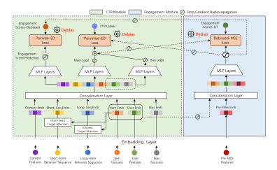

Engagement score
Aggregate the weighted impact of 100+ post-click MBs into a normalized sample-level score that represents interest beyond the terminal label.
EBD addresses the gap between explicit actions and implicit interest by turning fine-grained user-device interactions into scalable engagement supervision for CTR and CVR prediction.
CTR and CVR models commonly treat clicks and purchases as binary ground truth. In practice, an accidental click can carry little interest, while an unclicked item may still receive prolonged viewing and careful exploration.
This mismatch is Intention-Action Divergence (IAD) bias: explicit user-action labels diverge from implicit interest levels inferred from micro-behaviors.

The paper mines fine-grained user-device interactions that occur before and after item clicks. Pre-click MBs capture exposure, swipe, and click cues in the two-column feed. Post-click MBs capture richer activity in Waterfall Pages and Product Detail Pages.
Rather than serving these signals online as expensive historical sequences, the approach compresses post-MBs into a lightweight, sample-level engagement score for training.

The method turns implicit engagement into training supervision in three stages, while keeping micro-behaviors out of online serving.
Aggregate the weighted impact of 100+ post-click MBs into a normalized sample-level score that represents interest beyond the terminal label.
Pointwise debiasing emphasizes low-bias samples; pairwise debiasing learns relative intention as an auxiliary ranking objective.
A click-engagement siamese network lets predicted click probability and debiased engagement scores correct each other through co-training.

Pre-click and post-click micro-behaviors show clear outcome differences. The proposed debiasing framework converts that signal into both offline ranking gains and online business impact.


ERMB contains 66.55 million impressions, 22.76 million clicks, and more than one hundred pre-click and post-click micro-behavior signals.
Proceedings of the 35th ACM International Conference on Information and Knowledge Management (CIKM '26).
@inproceedings{wang2026ebd,
title = {EBD: Engagement-aware Bidirectional Debiasing with User Micro-Behaviors
in E-commerce Recommendations},
author = {Wang, Weiqiu and Zhang, Runfeng and Liu, Yifei and Zhu, Anqi and Fang, Jie
and Pan, Mingming and Jiang, Haihong and Xu, Wen and Yu, Yipeng and Yu, Jiahao
and Wang, Yijiao and Yang, Yeqiu and Sun, Fei and Wu, Jian and Jiang, Yuning
and Liu, Xu and Feng, Chengxiao and Zheng, Bo},
booktitle = {Proceedings of the 35th ACM International Conference on Information and
Knowledge Management (CIKM '26)},
year = {2026},
doi = {10.1145/3799682.3840628}
}